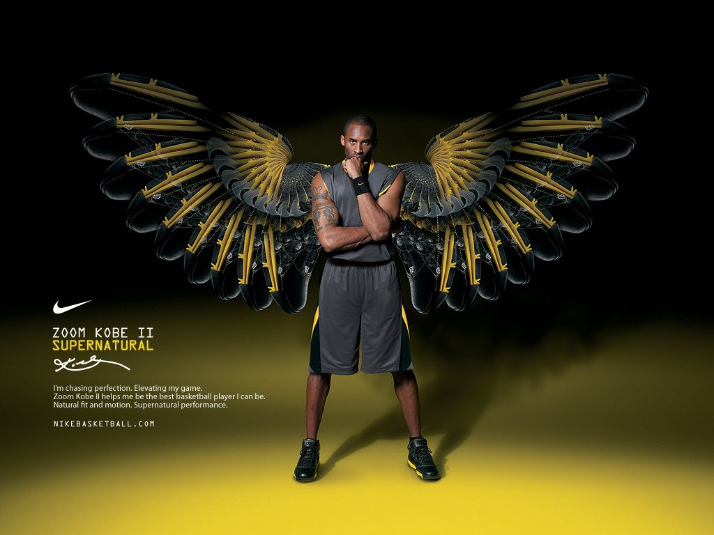

X Kobe Bryant

ขณะที่ Kobe Bryant เข้าสู่หอเกียรติยศเคียงข้างกับเหล่าผู้ยิ่งใหญ่แห่งวงการบาสเก็ตบอลในเมืองสปริงฟิลด์ รัฐแมสซาชูเซตส์ Nike Basketball ก็ร่วมมือกับ Undefeated แบรนด์ที่ทำงานร่วมกันมาอย่างยาวนานเพื่อเป็นเกียรติให้กับโอกาสนี้ผ่าน Kobe 5 Protro รุ่นพิเศษด้วย โดยมีโทนสีเคลือบทองที่คลุมเกือบจะทั่วทั้งส่วนบนของรองเท้าอันสื่อถึง Kobe ที่รักในการสะสมถ้วยรางวัลตลอดการเล่นอาชีพของเขา มาพร้อมเท็กซ์เจอร์หนังงูที่ยกย่องตัวตนในแบบ Black Mamba ขณะที่ Swoosh แบบไล่สีใช้สีและเบอร์เสื้อจากทั้งการเล่นให้ Los Angeles และในเวทีระดับประเทศ นอกจากนี้ ยังมีสัญลักษณ์ 5 ขีดของ Undefeated ปรากฏอยู่บนลิ้นรองเท้าและที่ส้น และมีพื้นรองเท้าชั้นในซึ่งมีรายละเอียดไมล์สโตนต่างๆ ที่ Kobe พิชิตมาได้ตลอดเส้นทางอาชีพอันโด่งดังของเขา